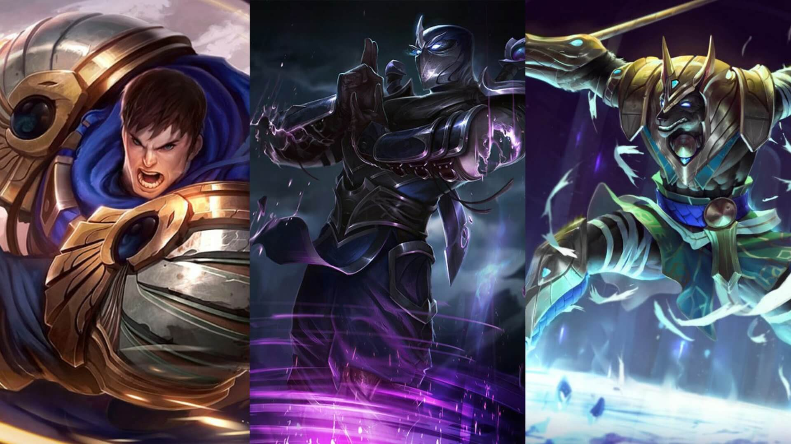
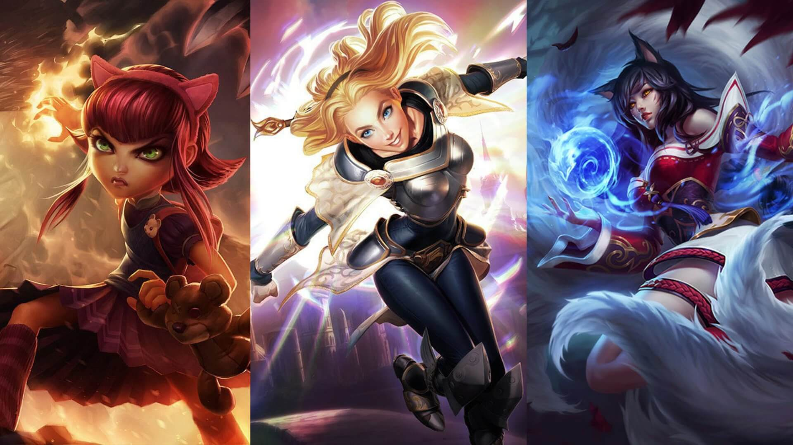
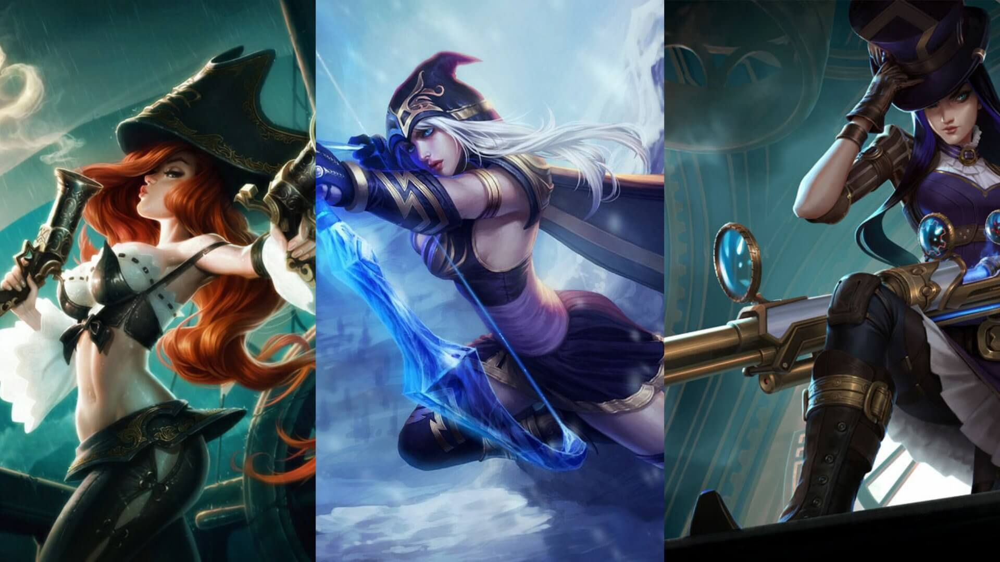
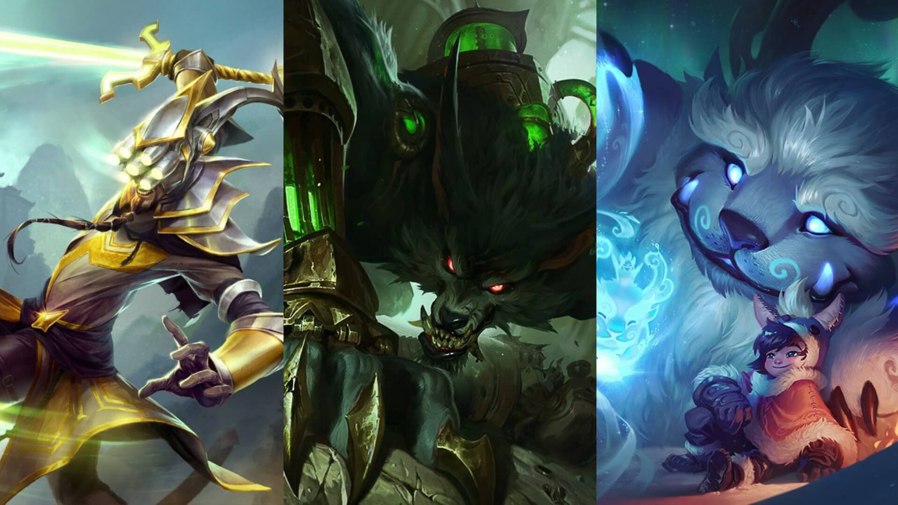
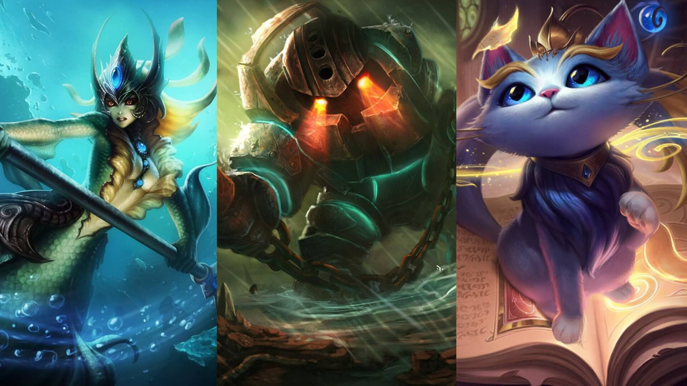

League of Legends
League of Legends es un juego de estrategia por equipos en el que dos equipos de cinco campeones se enfrentan para ver quién destruye antes la base del otro. Elige de entre un elenco de 140 campeones para realizar jugadas épicas, asesinar rivales y derribar torretas para alzarte con la victoria.
¿Cómo es el mapa de League of Legends?
El mapa de League of Legends se llama La Grieta del Invocador y es un campo de batalla simétrico con tres carriles principales:
Carril superior: Tambien conocida como Top Line, en este carril juegan los campeones que se especializan en el daño directo y la toma de objetivos.

Carril del medio: Tambien conocida como Mid Line, en este carril juegan los campeones que se especializan en el daño mágico y la creación de jugadas estratégicas.

Carril inferior: Tambien conocida como Bot Line, en este carril juegan los campeones que se especializan en el daño a distancia y la protección de sus aliados.

Jungla: El área de la jungla es un espacio estratégico donde los campeones pueden obtener beneficios como buffs y controlar el mapa.

Apoyo: El apoyo es un rol crucial en League of Legends que se enfoca en ayudar a los aliados a través de hechizos de curación, protección y control del juego.

Los campeones, sus clases y cual es mejor:
League of Legends cuenta con una amplia variedad de campeones, cada uno con sus propias habilidades, estilos de juego y roles específicos. Algunos campeones se especializan en el daño directo, otros en el daño mágico o en el control del juego. La elección del campeón adecuado depende de la estrategia del equipo y el estilo de juego del jugador.
Clases de campeones:
Aniquiladores: Son una clase de campeones que se especializan en el daño directo y la eliminación rápida de enemigos.
Controladores: Estran diseñados para ayudar a sus alidos con una potente utilidad y control de multitudes.
Luchadores: Son conbatientes especialistas en el corto alcance, capaces de infligir daño y resistir ataques enemigos.
Magos: Son campeones que se especializan en el daño mágico a distancia, utilizando hechizos y habilidades para infligir daño a sus enemigos.
Tanques: Son campeones que se especializan en el control del juego y la protección de sus aliados, con alta resistencia y capacidad de absorber daño.
Tiradores: Son campeones que se especializan en el daño a distancia, utilizando ataques básicos y habilidades para infligir daño a sus enemigos desde lejos.
Especialistas: Son campeones que se especializan en un rol específico dentro del juego, como el soporte o el luchador.